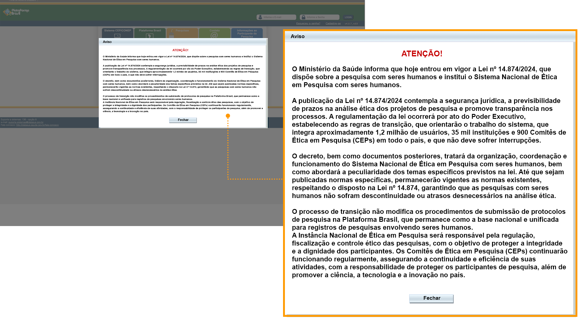

Módulo 2 | Aula 2 Sistema Brasileiro de Regulação Ética de Pesquisas com Seres Humanos
Ainda hoje, há pesquisadores que acreditam que as normas existentes são apenas para evitar práticas de profissionais inexperientes ou para regular o campo das ciências biomédicas. Desde 1996, o Brasil tem um Sistema de Regulação Ética de Pesquisas com Seres Humanos, denominado Sistema CEP/Conep. Nosso objetivo é que você compreenda como está estruturado e funciona esse Sistema, que busca principalmente garantir a proteção dos participantes de pesquisa.
A Bioética, em especial a Bioética baseada em princípios, tem papel fundamental nas discussões sobre ética em pesquisa.
O Sistema CEP/Conep é composto pela Comissão Nacional de Ética em Pesquisa (Conep) e pelos Comitês de Ética Pesquisa (CEP) e tem como dever precípuo a proteção do participante de pesquisa.
Comissão do Conselho Nacional de Saúde (CNS) tem função deliberativa, educativa, consultiva, normativa além de registrar e fiscalizar os CEP. Avalia ainda, projetos de áreas temáticas conforme determinado na Resolução CNS 446/11, após a apreciação do CEP institucional. O Sistema é regido por resoluções do CNS, que incluem detalhamento da formação e atuação de cada instância.
Tem a função deliberativa, consultiva e educativa. O comitê tem o papel de apreciar os projetos e monitorar o andamento das pesquisas, de modo que sejam respeitados os princípios éticos de proteção aos direitos humanos. Os CEP desempenham ainda um importante papel no processo pedagógico de formação e atuação dos pesquisadores.
Em 2024, o Brasil conta com mais de 900 CEP em todas as regiões do país e, aproximadamente 100 recebem, em média, mais de 200 projetos para apreciação ética a cada ano. Algumas instituições, grandes e complexas têm mais de um CEP. O sistema recebe mais de 90 mil projetos por ano (desses, 2% de análise da Conep) e tem mais de 600 mil pesquisadores cadastrados na Plataforma Brasil.
O Sistema conta com um arcabouço regulatório amplo representado pelas resoluções publicadas pelo CNS. Atualmente, as principais resoluções do sistema são a Resolução CNS 466/12 (que revogou a Resolução CNS 196/96) e a Resolução 510/16.
A Resolução 510/16 trouxe outra forma de ler e apreciar projetos de pesquisa que utilizem métodos próprios das Ciências Humanas e Sociais. A noção de vulnerabilidade muda, a de risco busca uma nova abordagem, a etapa de aproximação do pesquisador com o campo de pesquisa é reconhecida como possível, a palavra “termo” desaparece do Consentimento Livre e Esclarecido e é substituída por “registro”. Surge ainda, o Registro de Assentimento Livre e Esclarecido e a previsão de dispensa de tramitação pelo sistema CEP/Conep para determinadas pesquisas (opinião, dados secundários agregados sem identificação).
Nas duas Resoluções, o Consentimento deve ser Livre e Esclarecido e em forma de um convite que parte do pesquisador ao participante. No entanto, enquanto a Resolução 466/12 utilizada pelas pesquisas clínicas solicita a formalidade das assinaturas, o registro previsto na Resolução 510/16 permite que seja efetivado sob a forma “escrita, sonora, imagética, ou em outras formas que atendam às características da pesquisa e dos participantes” (Resolução CNS 510/16). É importante ressaltar que a Resolução CNS 510/16 não impede o uso de um documento formal, denominado Termo de Consentimento Livre e Esclarecido e é o pesquisador quem deverá propor em seu protocolo de pesquisa a forma que julga mais adequada para o registro de consentimento.
Em 2018, foi criada a Portaria 334/2018-PR referente ao Fórum de Comitês de Ética em Pesquisa (CEPs) da Fiocruz. A missão dessa instância é estabelecer um fórum permanente para discussão, ampliação do conhecimento e eventual uniformização dos aspectos éticos das pesquisas que envolvem seres humanos. Além disso, o Fórum pretende integrar processos e procedimentos dos CEPs, aumentando a eficiência institucional na avaliação e no acompanhamento de projetos de pesquisa envolvendo seres humanos.
A missão dessa instância criada em portaria é estabelecer um fórum permanente para discussão, ampliação do conhecimento e eventual uniformização dos aspectos éticos das pesquisas que envolvem seres humanos. Além disso, o Fórum pretende integrar processos e procedimentos dos CEPs, aumentando a eficiência institucional na avaliação e no acompanhamento de projetos de pesquisa envolvendo seres humanos.
Na Fiocruz, a submissão ao CEP de todo protocolo de pesquisa envolvendo seres humanos é um processo obrigatório.
Em 2024 foi aprovado um projeto de Lei pelo Congresso Brasileiro que dispõe sobre a pesquisa com seres humanos e institui o Sistema Nacional de Ética em Pesquisa com seres humanos. Essa Lei ainda não foi regulamentada, e ainda não se sabe como será, mas a orientação do Ministério da Saúde pode ser vista na mensagem a seguir, que deixa claro que as normas existentes que não contrariam a Lei continuam em vigor.

Observe a seguir a linha do tempo referente às resoluções e normas do sistema CEP/Copep:
-
1988
Resolução CNS 01/1988
Res. CNS 01/88 Revogada
Normas de pesquisa em saúde.
-
1996
Resolução CNS 196/1996
Resolução CNS 196/1996 Revogada
Pesquisas envolvendo seres humanos.
-
1997
Resolução CNS nº 240/1997
Resolução CNS nº 240/1997 Revogada
Definição de representante dos Usuários.
1997Resolução CNS nº 251/1997
Resolução CNS nº 251/1997
Novos fármacos, medicamentos, vacinas e testes diagnósticos.
-
Cooperação estrangeiras.
-
2000
Resolução CNS nº 301/2000
Resolução CNS nº 301/2000Não homologada
Manifesto contrário a modificação da Declaração de Helsinki.
2000Resolução CNS nº 303/2000
Resolução CNS nº 303/2000 Revogada
Reprodução humana.
2000Resolução CNS nº 304/2000
Resolução CNS nº 304/2000 Legislação amplamente utilizada, porém sinalizada como “Não Homologada” no site do Conselho Nacional de Saúde.
Normas para Pesquisas Envolvendo Seres Humanos – Área de Povos Indígenas
-
2004
Resolução CNS nº 340/2004
Genética humana.
-
2005
Resolução CNS nº 346/2005
Projetos multicêntricos.
2005Resolução CNS nº 347/2005
Resolução CNS nº 347/2005 Revogada
Armazenamento de materiais biológicos.
-
2007
Resolução CNS nº 370/2007
Resolução CNS nº 370/2007 Revogada
Registro e credenciamento de CEP.
-
2008
Resolução CNS nº 404/2008
Resolução CNS nº 404/2008 Revogada
Retirar notas de esclarecimento referente a modificação da Declaração de Helsinki.
-
2011
Resolução CNS nº 441/2011
Biobancos e Biorepositórios.
2011Resolução CNS nº 446/2011
Composição da Conep.
-
2012
Resolução CNS nº 466/2012
Pesquisa envolvendo seres humanos.
-
2013
Norma Operacional CNS nº 001/2013
Norma Operacional CNS nº 001/2013
Norma Operacional 001/2013 ( Res. CNS 466/12).
-
2015
Manual de Pendências Frequentes Pesquisa clínica
-
2016
Resolução CNS nº 506/2016
Acreditação dos Comites de Ética em Pesquisa.
2016Resolução CNS nº 510/2016
Ciências Humanas e Sociais.
-
2017
Resolução CNS nº 563/2017
Doenças ultrarraras.
-
2018
Resolução CNS nº 580/2018
Pesquisa no SUS.
-
2020
Resolução CNS nº 647/2020
Representante dos Participantes de Pesquisa.
-
2022
Resolução CNS 674/2022
Tipificação e Tramitação das pesquisas.
-
2024
Lei Nº 14.874 de 28 de maio de 2024
Lei Nº 14.874 de 28 de maio de 2024
Dispõe sobre a pesquisa com seres humanos e institui o Sistema Nacional de Ética em Pesquisa com Seres Humanos.
A Lei foi aprovada, no entanto ainda não foi regulamentada.